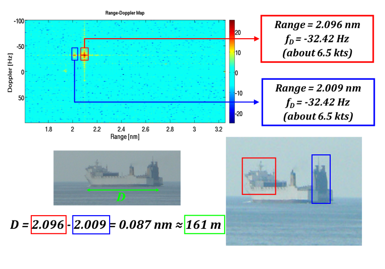
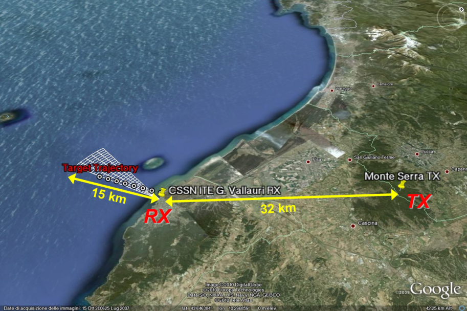
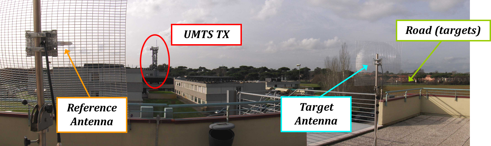
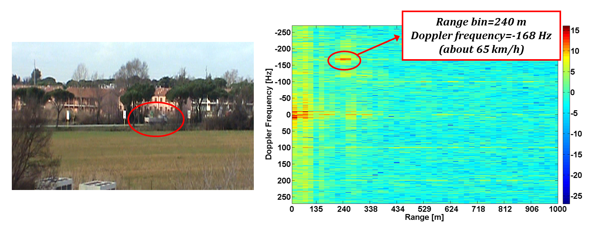

USRP技术多频段无源双基地雷达
原作者：Amerigo Capria, Dario Petri, Michele Conti, Fabrizio Berizzi
Ettus研究使用的产品：USRP1和USRP210配备DBSRX子
研究机构：CNIT（全国大学校际联盟电信）
实验室：RASS（雷达和监视系统）国家实验室
应用领域：雷达系统
距离 - 多普勒地图相对于探测船在大约2.1海里（NM）从接收DVB-T。目标结构提出了两种主要的散射结构;工程浩大在船头和船尾处的另一大之一。
挑战：
国立大学间联盟电信（CNIT）面临着创造一个负担得起的和灵活的无源双基地雷达演示的挑战。
解决方案：
的USRP1和USRP N210的灵活性在具有成本效益的，可配置的被动双静态雷达演示的发展被利用。
介绍
CNIT（国立国际大学联盟电信）是40意大利大学的一个非盈利性组织，协调和促进协作环境理论与实践研究活动，包括产业界和学术界。该组织专注于电信和信息通信技术领域。
无源双基地雷达（PBR）技术，有趣的是，许多行业和组织，因为它相对于主动雷达技术提供更低的成本，更低的功耗，更隐蔽的监视能力。无源雷达使运营商能够检测，衡量和跟踪目标，不发送一次信号。相反发射无源雷达利用其它信号，通常广播传输。这些通常被称为机会（IO）中的照明。被动雷达兴趣最近生长作为发射器的数量增加，数字信号类型数量的增加，且有压力，以优化雷达系统的成本。国立大学间联盟电信（CNIT）建立了一个目标，创造一个负担得起的和灵活的PBR演示和测试平台。它最初将用于证明策略路由技术的DVB-T和UMTS。
无源雷达的架构，保证不使用发射器连续监视，因此最大限度地降低成本和功耗。实现软件定义的PBR允许的高度灵活性，并允许团队适应不断变化的环境和要求。该系统的优点表明采用了广泛的关注应用，如国土安全，沿海监测和预警系统，对车辆检测的被动雷达的可能性。
无源雷达概述
一个PBR接收器通常使用表示为参考通道和监控通道有两个接收通道。参考通道是用来捕获来自发射器的直接信号，并提供与目标返回进行比较的基准信号。这种系统的性能是严格相关于使用IO的主要特点。
根据模拟信号PBRS显示检测性能强烈地依赖于信号的内容。换句话说的信号的光谱特性，以及所发送的功率，是重相关的所发送的信息的类型。相反数字波形，由于特定的信号编码，其光谱特征是独立的信号内容。其中数字iOS上，研究人员决定专注于UMTS和DVB-T信号，它具有广泛的带宽提供了良好的空间分辨率。
图1 - DVB-T的实验场景的几何形状。接收器是位于“CSSN-ITIS G. Vallauri”研究所利沃诺，被剥削的DVB-T发射机比萨定位于“蒙塞拉”（约远离接收器32公里）和监视天线是针对一个在接收器站点的前海的面积。
实现选项
该小组进行了研究贸易审查Ettus研究USRP设备的特性，以及许多其他软件定义无线电（SDR）。不像其他现成的架子选择，USRP系列是一个完整的，通用的解决方案。用于实验的需要包括能够获得不同类型的波形的一个电路板，并因此在RF前端的柔性。该团队希望硬件能够很容易地改变载波频率，射频增益，信道带宽等。示威者还需要同时从两个同步渠道获得的能力。所有这些功能是由USRP硬件提供。
考虑到材料成本和易于开发，当对定制比较USRP特别提款权是最好的选择，或其他现成的，货架选项，因此USRP N210被选为开发这一多波段PBR示威者与两个DVB-T和UMTS信号操作。
快速发展的道路
用于被动双静态雷达实验设备由商用现货供应，低成本的电视天线（DVB-T接收）或网格抛物面天线（UMTS接收）与两个同步USRP N210板一起搭载的构成DBSRX子。这种结构的主要特点是可以通过软件在800 MHz或2.1 GHz的，以便利用这两种不同的IO调谐的能力。系统管理和控制使用UHD API一个C ++框架来实现。其主要功能涉及到调整，滤波，放大，采样，抽取和数据传输。最后，所有的雷达信号处理算法被一个工作站共同利用的CPU / GPU上执行。
图2 - UMTS实验设置。接收器被放置在比萨大学信息工程系。基线长度（发射机 - 接收机距离）为约1.14微米。在UMTS下行通道在2.1367 GHz的运行。汽车和卡车的部门（约250米的接收器）附近的道路行驶被认为是感兴趣的目标。
USRP N210引出成功实施PBR
SDR概念证明是一个多频带被动双静态雷达执行成功的应用。具体地说，用于实现能够利用两者的DVB-T和UMTS信号的多频带PBR验证机的低成本的解决方案。实验结果通过使用软件定义的体系结构被证明是DVB-T /基于UMTS的PBR系统的可行性。集中在模糊函数初步测量同时显示信号，用于雷达应用的适用性。实验系统设置和实时数据收购。该雷达功能在船舶检测，并在市区寻找动如汽车和卡车目标的沿海环境测试上。
图3 - UMTS相对于车辆检测距离多普勒图。目标回波处于对应到240米（接收机目标的距离）具有负多普勒频率等于168赫兹（即：大约65公里/小时）的范围内箱很容易辨认。